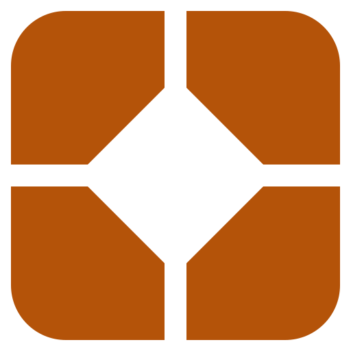

OpenPost tool logos
Four tool identities derived from Converge. Flat SVGs, with separate geometry for future
motion. These assets do not replace theme icons.
The original mark already exists as logo.svg. The matching tile here
uses its exact symbol geometry with the tool family’s padding. Tool logos are intended for
branded headers, launchers and marketing. Navigation continues to use the selected theme’s
icon pack.